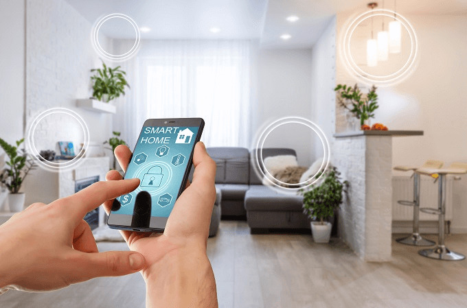
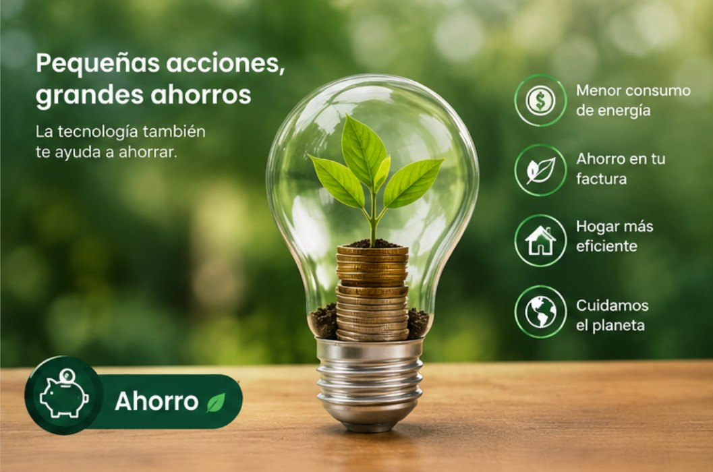

HALLAZGO 01
Sensores para analizar el consumo
Los sensores pueden proporcionar información sobre las condiciones del entorno y el funcionamiento de los dispositivos eléctricos.

Investigación y actualidad energética
Principales hallazgos y fuentes analizadas durante la investigación.
La revisión documental permitió identificar diferentes posibilidades de las tecnologías automatizadas para apoyar la gestión del consumo energético residencial.
Los sensores pueden proporcionar información sobre las condiciones del entorno y el funcionamiento de los dispositivos eléctricos.

La integración de tecnologías inteligentes permite ampliar las posibilidades de los sistemas de gestión energética.

Los sistemas automatizados pueden contribuir al análisis y optimización del consumo eléctrico residencial.
Durante 2023, la región Andina presentó el mayor consumo de energía eléctrica del sector residencial del país, según el dato citado de la UPME en el artículo.
Este contexto refuerza la importancia de estudiar alternativas tecnológicas orientadas al uso eficiente de la energía.
Estudio sobre técnicas para detectar patrones de consumo energético de electrodomésticos en plataformas de hogares inteligentes.
Investigación sobre predicción y optimización energética en hogares inteligentes.
Revisión sobre sistemas inteligentes de gestión energética.
Estudio sobre predicción del consumo y tiempo de uso de electrodomésticos mediante HEMS, redes LSTM y medidores inteligentes.
La revisión permitió identificar oportunidades relacionadas con la integración de sensores, automatización y herramientas inteligentes para analizar el consumo energético residencial.
Estos resultados pueden servir como base para futuras propuestas tecnológicas.